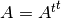
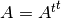

What is a Domain Specific Language¶
Domain specific languages (DSL) refers languages developed with a particular domain in mind. The advantage of a DSL over a general-purpose language is the domain usually contains optimizations that are not available for general use. These optimizations could be very specific and thus not interesting for a general audience, or perhaps unsafe without the assumptions made by the domain.
For example, take matrices. In a general purpose language the matrix will be
an array of numbers. While it may be trivial that for any given matrix
 we know , it is not trivial to know this for an array
of numbers. Especially since low level code only sees the transpose as an
operation on the members of the array. Thus if a user actually transposes a
matrix twice a large amount of work goes into doing operations that were
unnecessary. If on the other hand, a user made such a statement in a DSL that
understood what matrices are then it could optimize the operation without any
trouble.
we know , it is not trivial to know this for an array
of numbers. Especially since low level code only sees the transpose as an
operation on the members of the array. Thus if a user actually transposes a
matrix twice a large amount of work goes into doing operations that were
unnecessary. If on the other hand, a user made such a statement in a DSL that
understood what matrices are then it could optimize the operation without any
trouble.
While domain specific optimizations are a huge bonus for DSL’s the downside often is portability or interoperability. The language features you want are at the mercy of the person implementing the code generator. This drawback has largely been a primary reason for many to prefer libraries rather DSL’s to provide domain knowledge. At the very least it seems easier to dive into a library and discover what is going on rather than debug the full code generator. This situation is exactly why the Ignition project was started. By providing a simple framework for developing DSL’s the hump of developing a whole code generator will lessen.